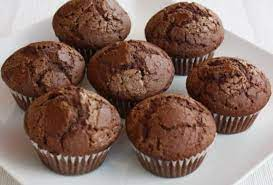

Muffin recipe

Description
A muffin is an individual-sized, baked product. It can refer to two distinct items, a part-raised flatbread that is baked and then cooked on a griddle (typically unsweetened) and a cupcake-like quickbread (often sweetened) that is chemically leavened and then baked in a mold.
Ingredients
- 1 teaspoon baking powder.
- 1 and 3/4 cups (219g) all-purpose flour (spoon & leveled)
- 1 teaspoon baking soda.
Steps
- Preheat oven to 425°F (218°C). Spray a 12-count muffin pan with nonstick spray or line with cupcake liners. Set aside.
- In a large bowl, whisk the flour, baking powder, baking soda, cinnamon, and salt together. Set aside.
- In a large bowl using a handheld or stand mixer fitted with a paddle attachment, beat the butter on high speed until smooth and creamy, about 1 minute. Add the brown sugar and beat on high until creamed, about 2 full minutes. Scrape down the sides and bottom of the bowl as needed. Add the eggs, sour cream, and vanilla extract. Beat on medium speed for 1 minute, then turn up to high speed until the mixture is combined. Scrape down the sides and bottom of the bowl as needed.
- Pour the dry ingredients into the wet ingredients and beat on low speed until just about combined. Add the milk and continue to beat on low until combined. Fold in add-ins. (See flavors/details in the notes below.)